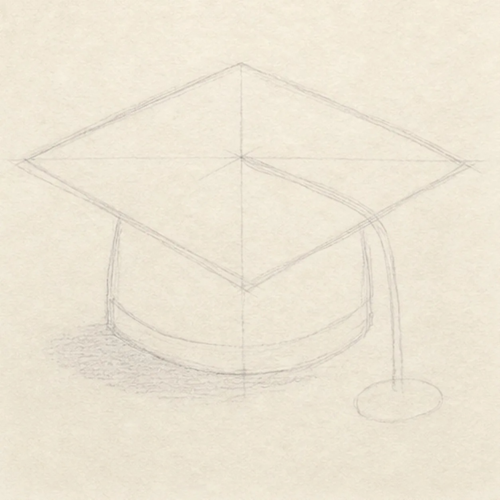
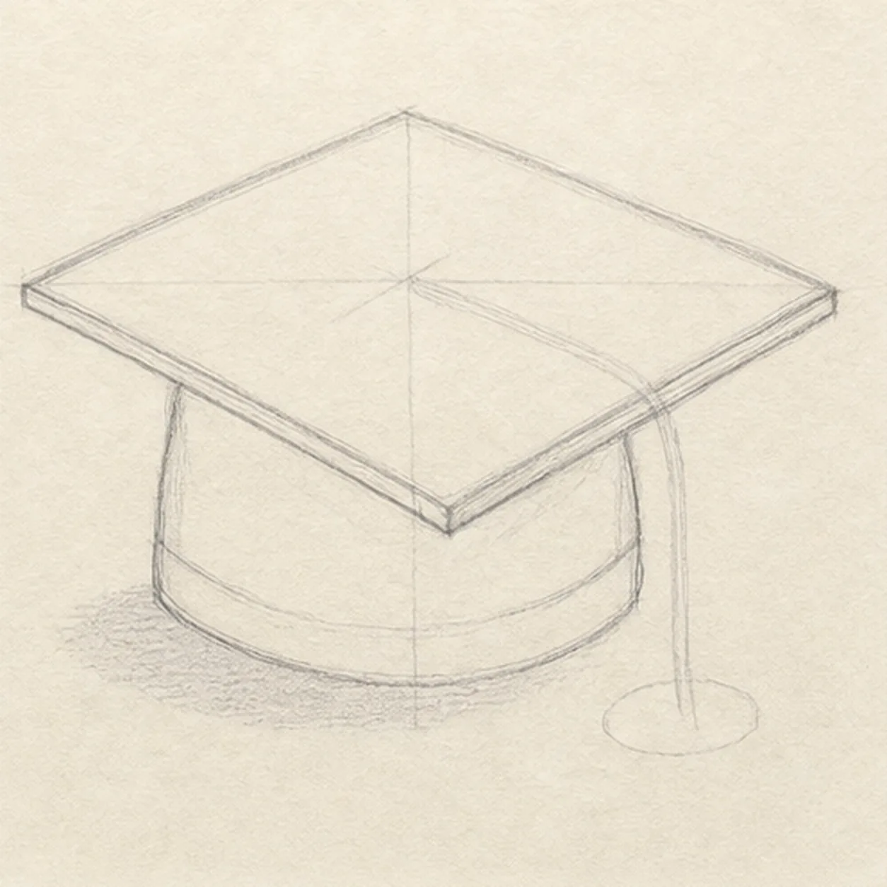
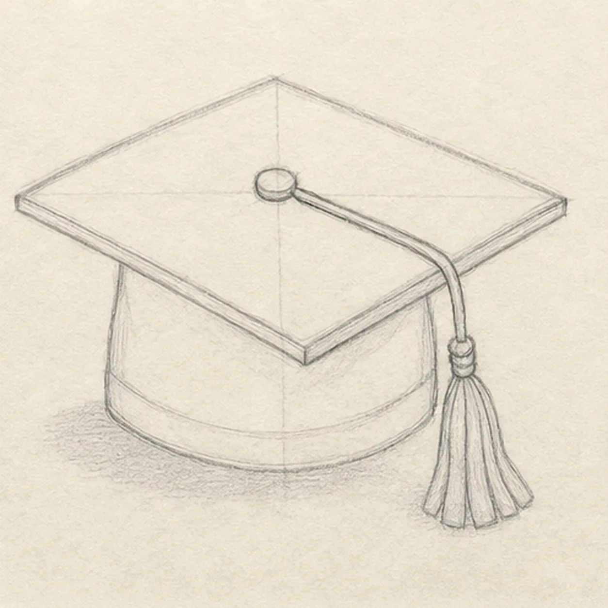
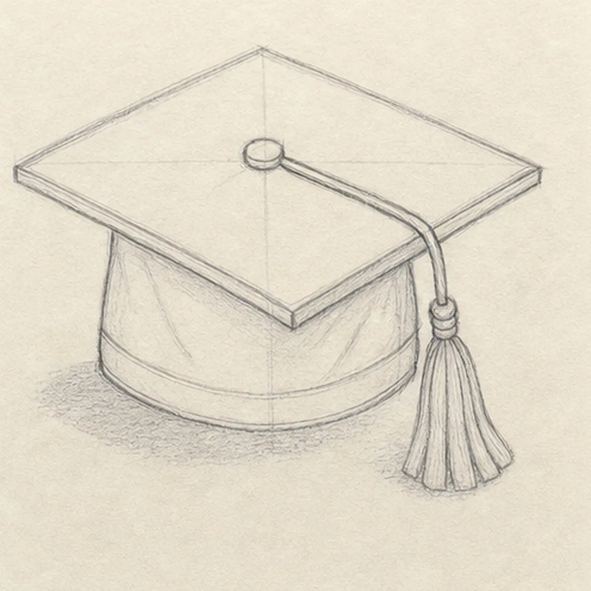
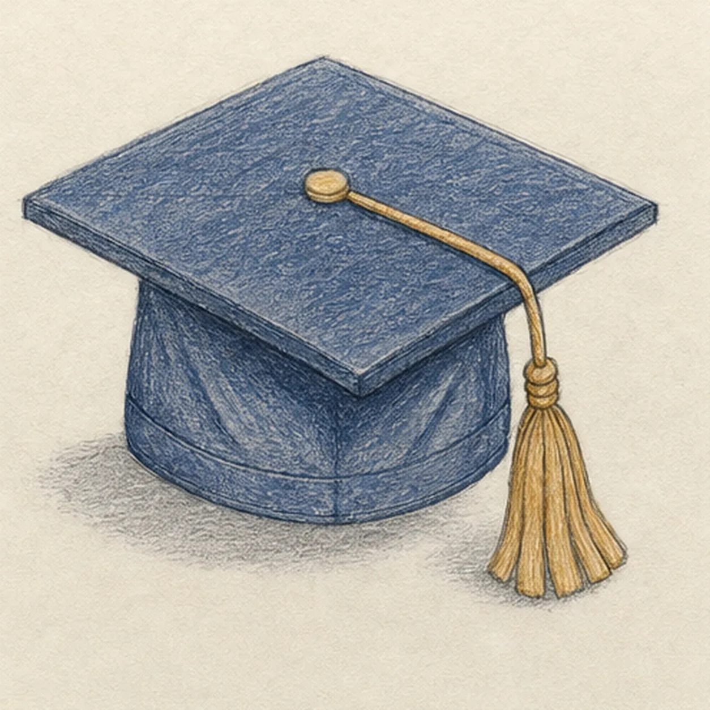

From the archive
Let's draw a graduation cap
Treat this as one small practice round: build the subject lightly, notice the shapes, then darken only the lines that help the finished sketch.
-
01

Set the cap's perspective
Draw one pale perspective diamond with a center cross, then place the crown block and curved lower band beneath it, reserve one cord route to the front-right corner, and mark the tassel and shadow footprints.
Sketch tip: Ghost the diamond's four edges before touching down and compare opposite sides as pairs. Keep the cord route pale from center to corner so you will not finish board detail beneath it.
-
02

Build the board and crown
Wrap the guides with one thin diamond board, showing its front and right thickness edges, then shape the soft crown and curved lower band beneath it.
Sketch tip: Rotate the page for each long board edge and pull it in one relaxed pass. Stop the crown contours at the board instead of drawing fabric that the top permanently covers.
-
03

Drape the tassel
Add one round center button, one cord following the reserved route over the front-right corner, one compact knot, and one hanging tassel with exactly five broad fringe groups.
Sketch tip: Break the board edge cleanly where the cord crosses it, then draw the tassel first as one tapered envelope. Divide that envelope into five broad groups rather than dozens of hair-thin strands.
-
04

Fold the fabric
Add exactly three soft fold lines to the existing crown, one lower band seam, clean overlap breaks around the cord, and a few light strand lines inside the established tassel.
Sketch tip: Aim each fold from the board toward the lower band, using lighter pressure than the outer contour. The folds should describe fabric tension without slicing the crown into equal panels.
-
05

Shade the graduation cap
Add graphite values to the established planes, deep-navy pencil to the board and crown, warm ochre to the button, cord, knot, and tassel, paper highlights, and one broken cast shadow.
Sketch tip: Pull navy strokes with each board plane and curve them around the crown. Leave small paper gaps instead of filling to a smooth digital-looking surface, then build the shadow outward from the cap's contact points.
-
06
Set the cap's final contrast
Strengthen the keeper contours and clarify the established diamond board, crown, button, cord, five-part tassel, seams, folds, restrained color, highlights, and broken shadow.
Sketch tip: Trace the cord once from button to tassel, count five broad fringe groups, and stop while the pencil grain still shows. Your cap colors and tassel length can change while the same perspective construction stays useful.